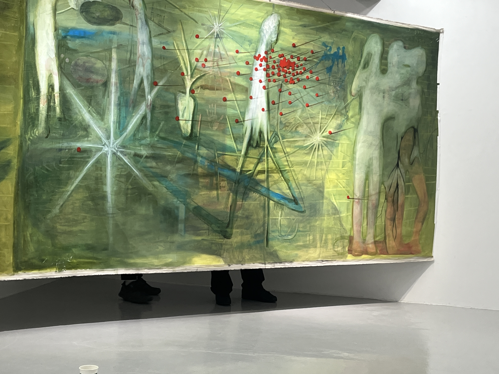
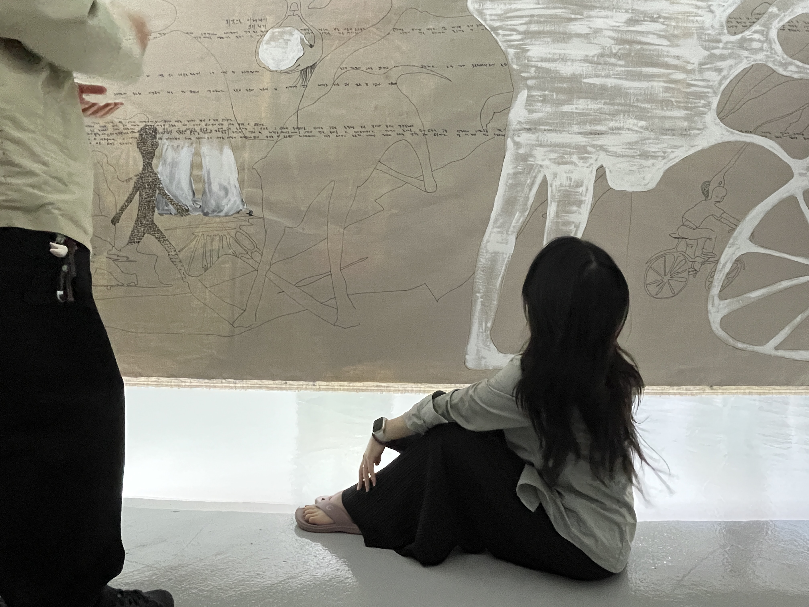
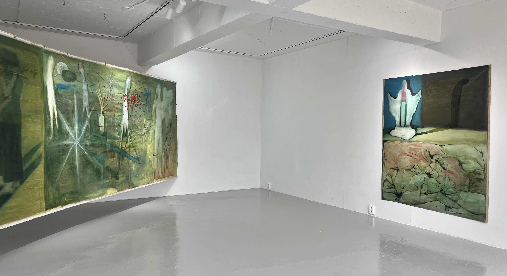
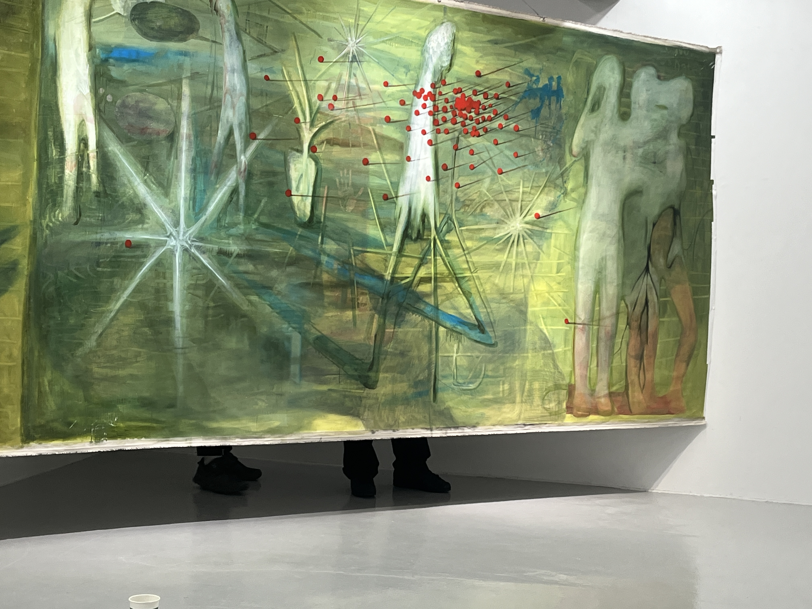
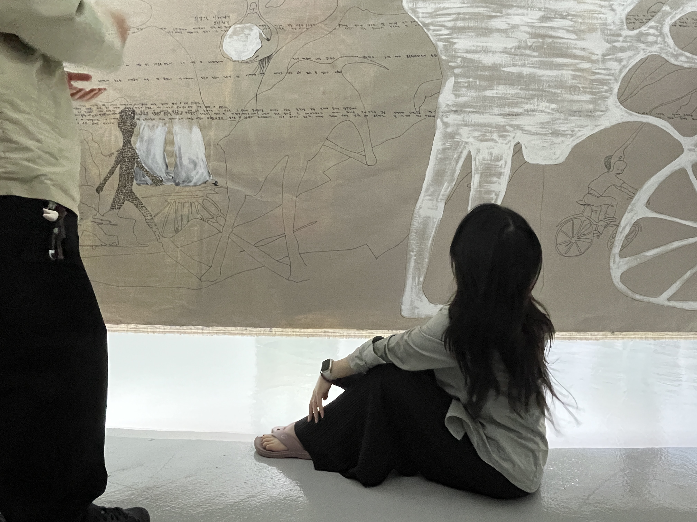
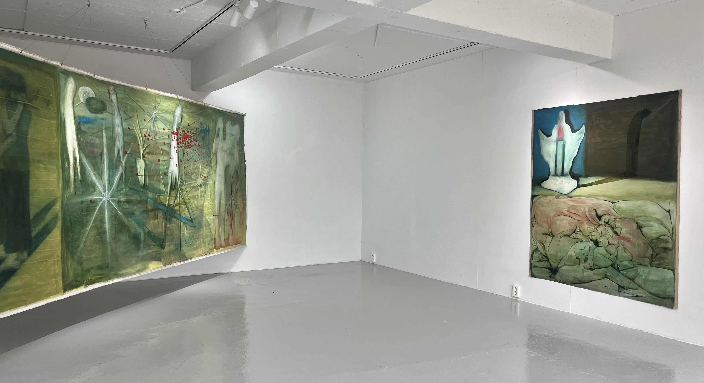
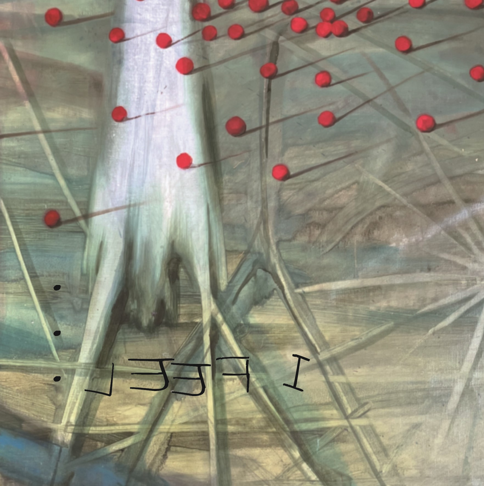
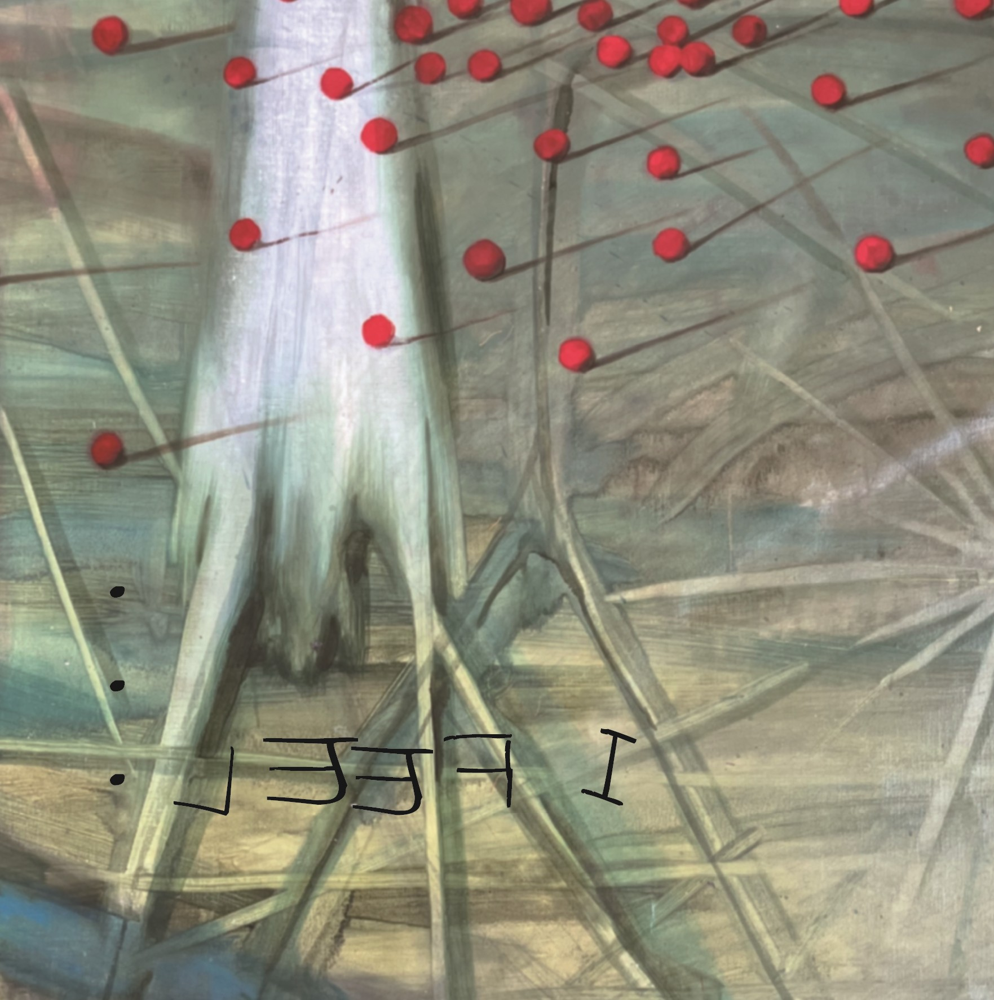

 

스타터팩 프로젝트 #3_ I Feel...
장소: 스페이스 위버멘쉬
작가: 유시안
주최/주관: 스페이스 위버멘쉬, 위버멘쉬 프로젝트
기획: 오윤영
유시안 개인전 《 I Feel... 》은 스타터 팩 프로젝트(Starter Pack Project)의 세 번째 기획초대전이다. 스타터 팩이란 게임 용어로 신규 플레이어가 게임을 시작하고 실행하는 데 도움이 되도록 설계된 것을 뜻한다. 스페이스 위버멘쉬는 작가가 작업과 지역 아트 커뮤니티에 적응하고 생존하는 과정에 익숙해지도록 돕고자 한다.
유시안의 회화 작업은 여러 층으로 이루어져 있다. 이번 작업에서는 얇고 희미하게 그림을 쌓아 올렸다. 덮여서 희미해진 흔적을 추적하여 다시 재현해 내기도 한다. 작업실의 화분, 어머니가 손질한 향어, 납작해진 쥐, 상상 속 이야기 등 아른거리는 잔상을 붙잡아 그려내고자 했다. 쌓아 올린 이미지가 캔버스 위에서 얽히며 층은 더욱 깊어진다.
“종지부를 찍는다”라는 말이 있듯이 문장 부호에서 한 개의 점은 종결을 나타낸다. 여기에는 어떤 것도 개입할 수 없다. 하지만 점이 모이면 말줄임표(...)가 된다. 말줄임표는 말 일부를 생략하거나 머뭇거림을 보일 때 사용한다. 전시명 《 I Feel... 》에서 알 수 있는 것은 단지 그가 어떤 느낌을 받았다는 점이다. 유시안의 작업에는 확언할 수 없는 세계가 존재한다. 납작해 보이는 화면 속에는 그의 감정과 기억이 물감과 함께 엉겨있다.
자신이 감지한 것을 그려냄으로써 신호를 보낸다. 어디서 온 것인지 모를 이미지로 화면을 채우고 숨기기를 거듭한다. 나란히 늘어선 점 사이에 공간이 존재하듯, 그의 작업에도 행간이 만들어진다. 여기 숨어 있는 이야기들은 보는 이가 자신을 다시금 발견해 주기를 기다리고 있다. 작가는 회화가 스스로 작동하는 힘을 가졌다고 믿는다. 그의 작업 속 세계는 시선으로 인해 계속 연결되고 재생된다. 유시안은 층 사이, 감각의 세계와 현실을 잇는 매개자다.